Status quo, Ziele und Visionen – von der Schulbildung bis zum Community Center.
Gründungsgedanke unseres Vereins ist es, bedürftigen Kindern den Besuch der Schule zu ermöglichen. Denn obwohl Schulbildung in Kenia seit 2003 offiziell kostenlos ist, sieht die Realität leider anders aus: Erstens gibt es vor allem in den Slums viel zu wenige öffentliche Schulen, und zweitens fallen auch dort Gebühren an – etwa für Schuluniformen oder Prüfungen. Viele Kinder gehen deshalb gar nicht oder nicht dauerhaft zur Schule. Andere Familien verschulden sich, um ihren Kindern den Schulbesuch doch zu ermöglichen – in der Hoffnung, bald (wieder) Arbeit zu finden.
Der Schulbesuch bedeutet in Kenia dabei nicht nur Bildung und die damit verbundene Chance auf soziale Teilhabe und Aufstieg. Er bedeutet auch zwei Mahlzeiten am Tag – vormittags Porridge, nachmittags Ugali, Reis oder Bohnen. Für diese Kinder ist das leider keine Selbstverständlichkeit.
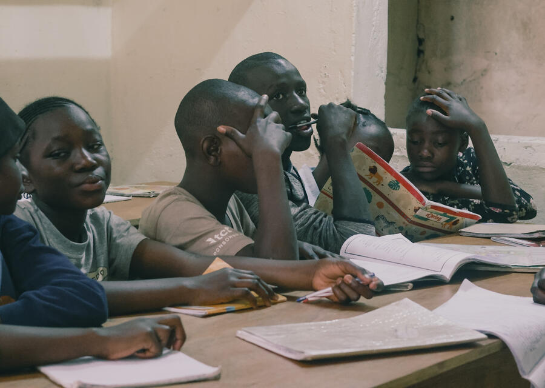
Die Antwort lautet: Teddy und Joseph. Die beiden sind vor Ort bestens vernetzt und bekommen regelmäßig von entsprechenden Schicksalen berichtet. Da wir (noch) nicht allen Kindern den Schulbesuch ermöglichen können, haben wir gemeinsam einen Evaluationsbogen entwickelt, aus dem sich eine faire Rang- und Warteliste ergibt. Durch die großzügige Unterstützung unserer Spenderinnen und Spender konnten wir bereits nach nicht einmal einem halben Jahr seit der Vereinsgründung 2024 über 100 Kinder in die Schule schicken – heute sind es 237 Kinder an rund 50 verschiedenen Schulen. Ist ein Kind einmal aufgenommen, begleiten wir es möglichst durch die gesamte Schullaufbahn. Die Gebühren zahlen wir pro Term direkt an die Schulen.
Teddy und Joseph hatten die Idee, eine Bibliothek zu eröffnen, die allen Kindern offensteht und ein Ort sein soll, an dem sie Unterstützung beim Lernen erhalten – unabhängig davon, ob sie aktuell eine Schule besuchen oder nicht. Diese Vision konnten wir im Februar 2025 in Korogocho in die Tat umsetzen: Auf circa 15 m² haben die Kinder dort jetzt einen Ort zum Lernen, Hausaufgabenmachen und Spielen. Wir haben den kleinen Raum gestrichen, Strom installiert, Möbel vor Ort bauen lassen und die Bücherei gemeinsam mit Teddy, Joseph und einigen ihrer Freunde eingerichtet.
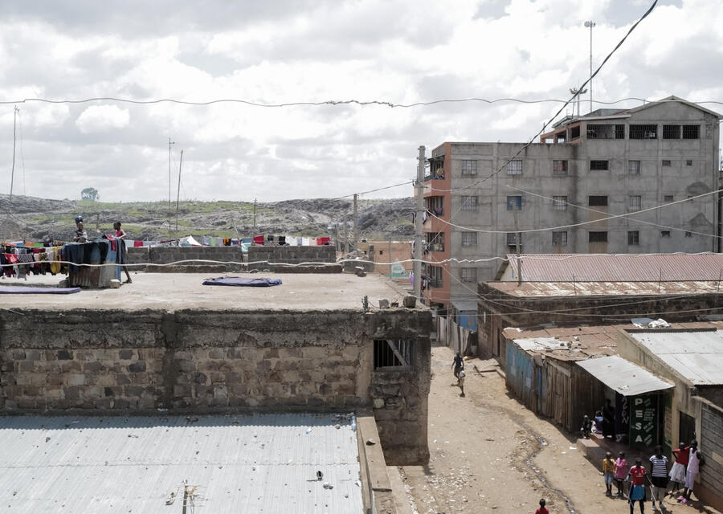
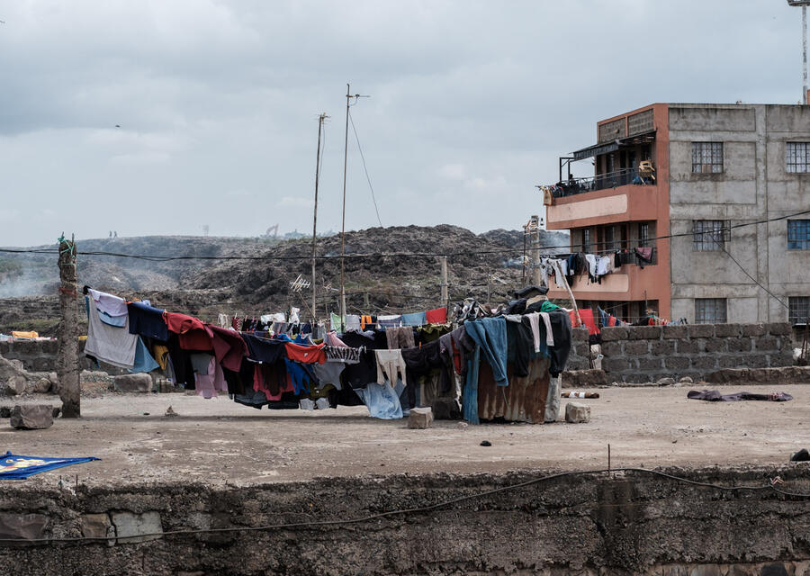
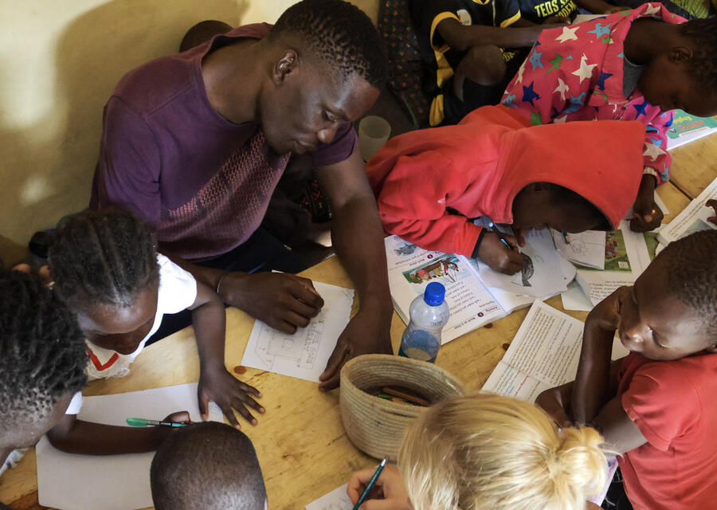
Mittlerweile gibt es eine Auswahl an Büchern – vor allem Schulbücher, die zu teuer sind, als dass die Familien oder die Schulen in den Slums sie vorrätig haben können. Dazu kommen Märchenbücher, einfache Romane und gespendete Second-Hand-Spiele aus Deutschland. Die Bücherei wurde vom ersten Tag an mit großer Begeisterung angenommen: Die Kinder kommen zahlreich nach der Schule, und einige Schulen nutzen den Raum abwechselnd am Vormittag für ihren Unterricht. Am Wochenende kocht das Team Porridge für die Kinder, die die Bücherei besuchen – so ist auch am Wochenende mindestens eine Mahlzeit gesichert.
Am Ostermontag 2026 folgte die zweite Bücherei in Mathare – eingeweiht mit einem kenianischen Eröffnungstag voller Tanz und Musik und einem zweiwöchigen Ferien-Nachhilfeprogramm. Wie in Korogocho ist auch hier bereits ein Ort entstanden, an dem die Kinder fast jede freie Minute verbringen. In Korogocho hat das Team zudem ein Diskussionsformat eingeführt: Jeden Freitagabend bereiten die Kinder ein Thema vor und tauschen Argumente aus – ein Format, das Sprache, differenziertes Denken und Selbstbewusstsein fördert und viel Spaß bringt.
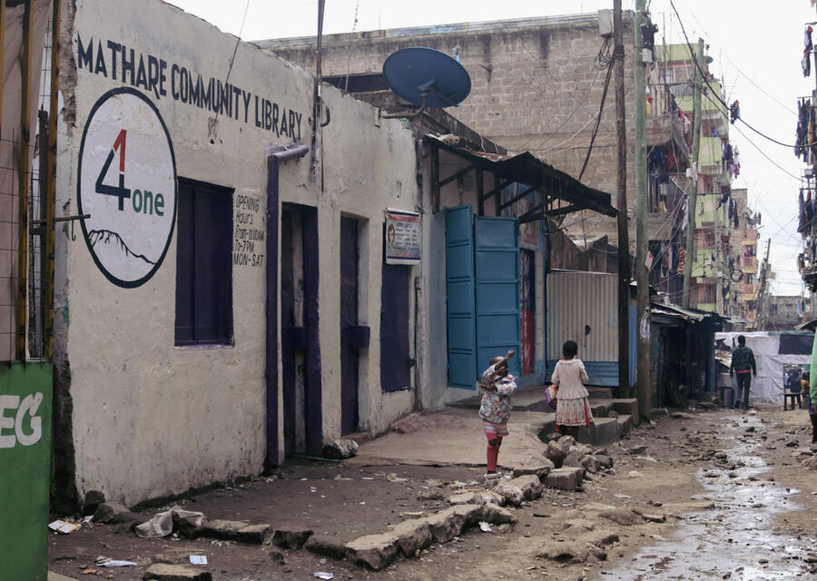
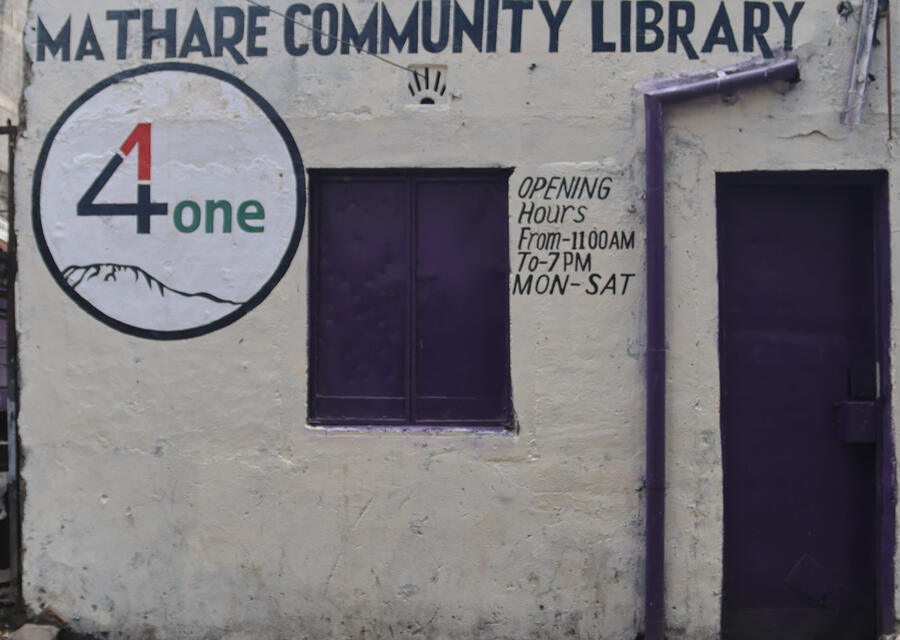
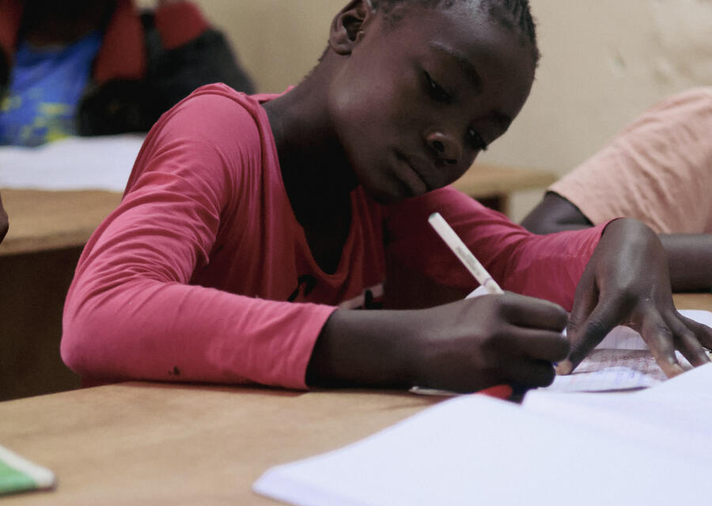
In den Schulferien bieten wir ein kostenloses Nachhilfeprogramm an – von Mathematik über Naturwissenschaften bis zu Diskussionsrunden. So bleibt der Lernfaden auch außerhalb der Schulzeit erhalten.
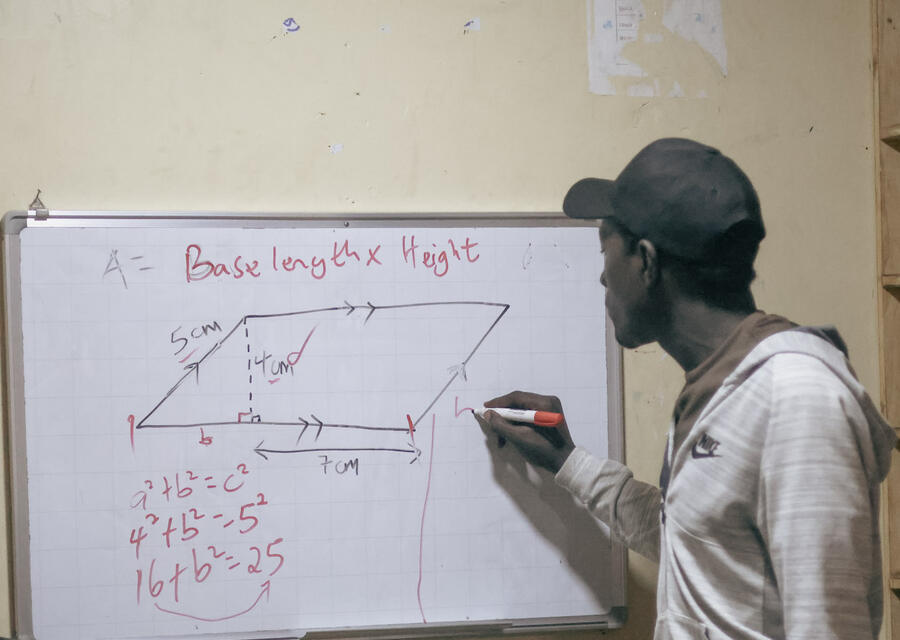
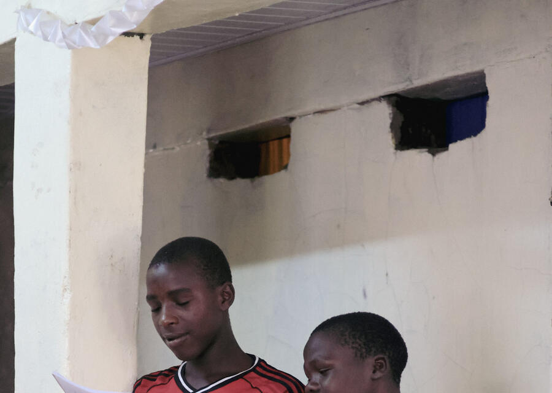
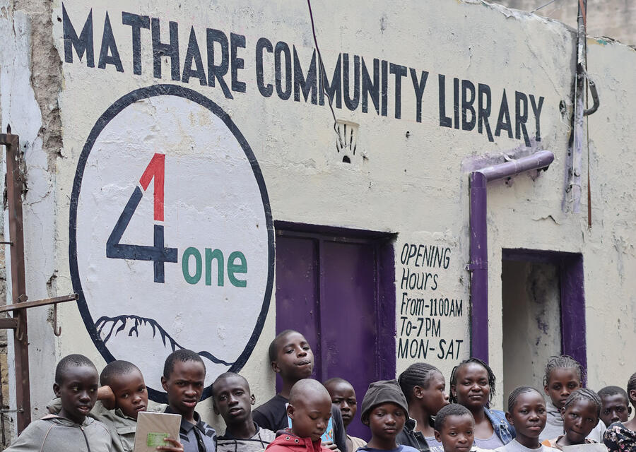
Gerne möchten wir die Büchereien weiter ausbauen und zusätzliche Bücher kaufen. Perspektivisch wären auch die Installation von WLAN (11 Euro/Monat) und ein Laptop grandios – die Kinder haben bisher keinen Zugang zum Internet und damit äußerst eingeschränkte Recherchemöglichkeiten. Über die aktuellen Fortschritte informieren wir auf unserem Instagram-Kanal.
Korogocho: Ngomongo
Mathare: Mathare North, Area 3
Montag bis Samstag, 11–19 Uhr · offener Zugang für jedes Kind · Schul- und Geschichtenbücher · kostenloses Nachhilfeprogramm in den Ferien
Mangelernährung ist in den Slums von Nairobi Alltag. Deshalb gibt es jeden Samstag in Ngomongo, Korogocho, eine Porridge-Ausgabe. Was als Initiative des Teams vor Ort begann, versorgt heute 150 bis 250 Kinder pro Woche mit einer warmen Mahlzeit. Zusätzlich hat das Team eine große Lebensmittelspende über Foodbank Kenya organisieren können.
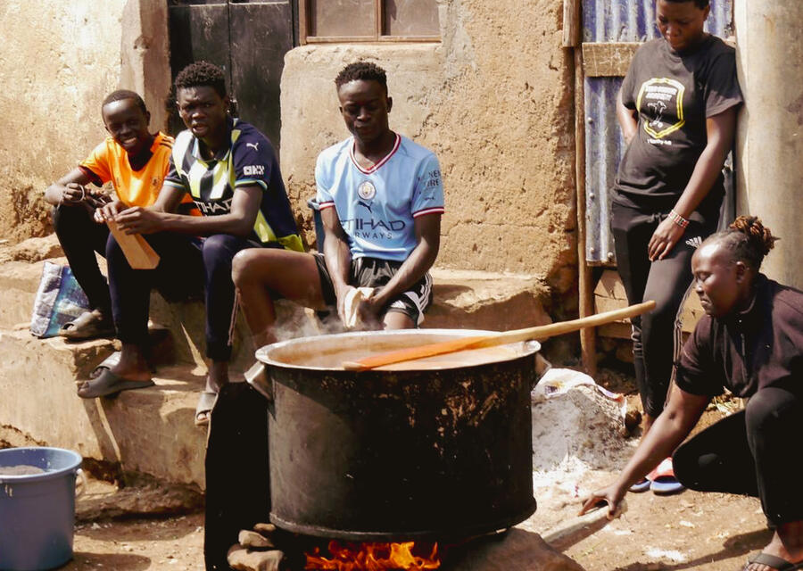
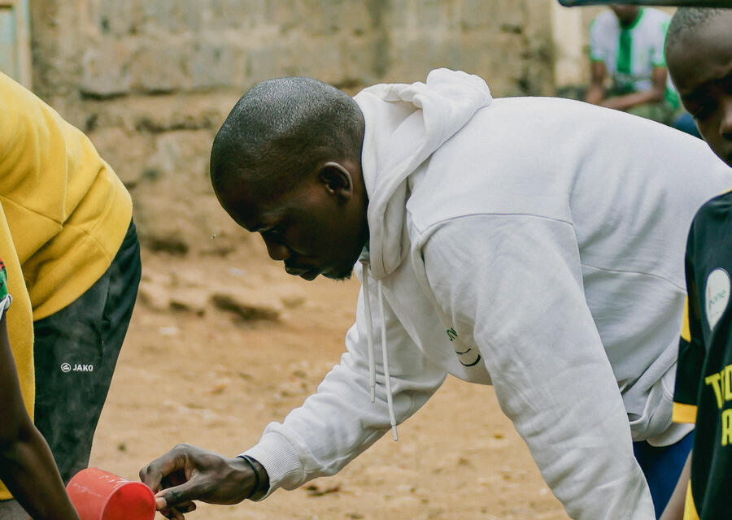
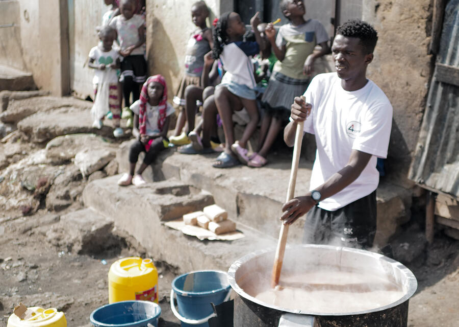
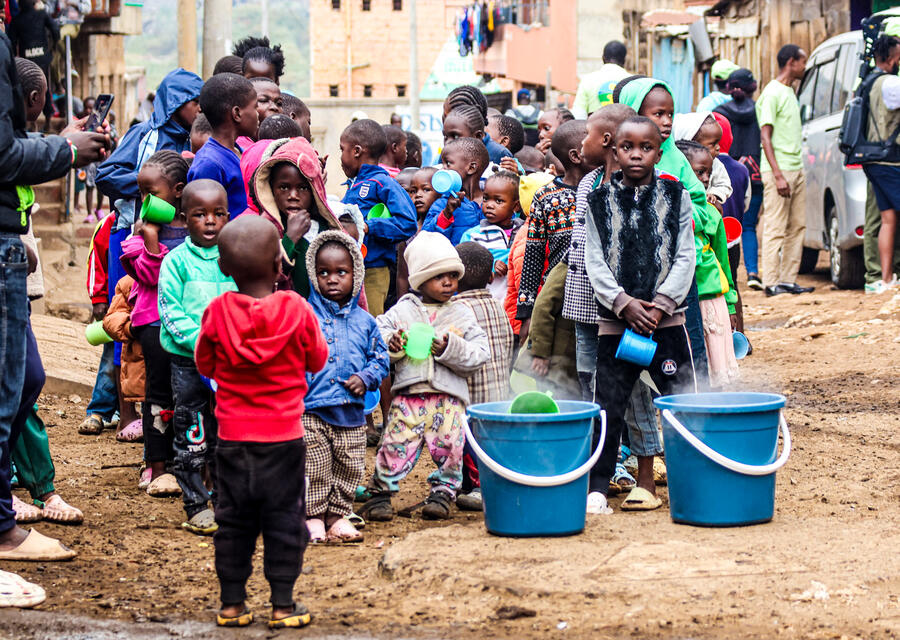
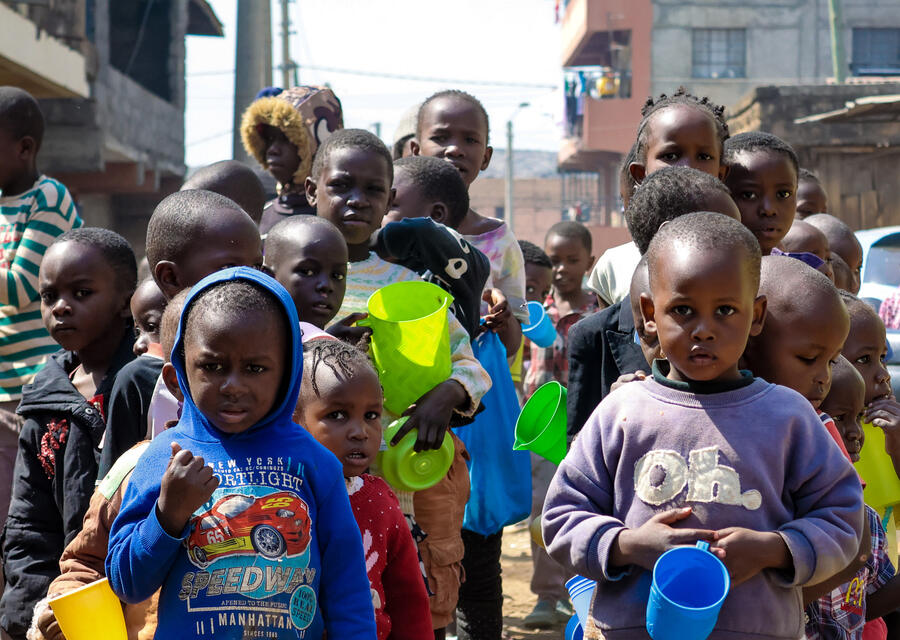
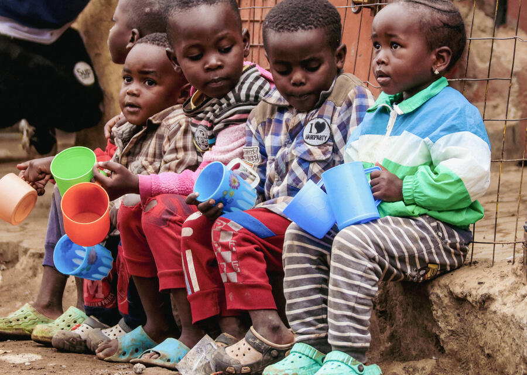
In einem Raum direkt neben der Bücherei in Korogocho nähen Maureen und Linet. Das Nähen beigebracht hat den beiden Marion – heute arbeiten sie eigenständig und schaffen sich damit ein eigenes Einkommen. Im künftigen Community Center bekommt das Nähprojekt einen eigenen, größeren Raum.
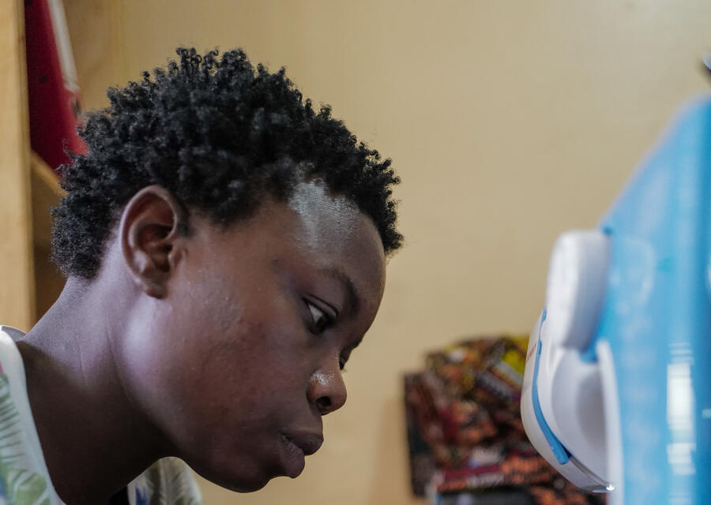
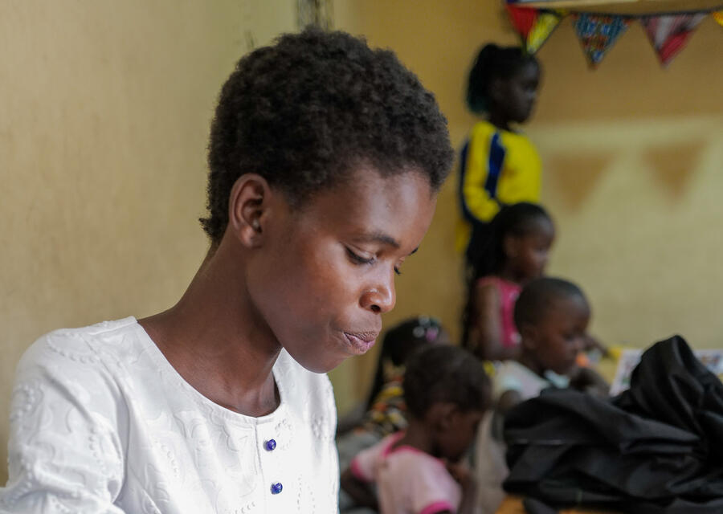
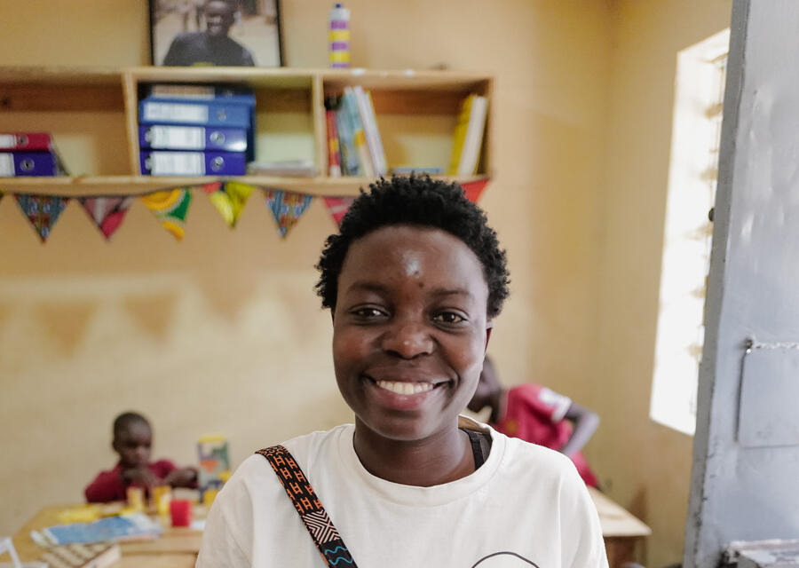
Zuhause fehlt oft der Platz, das Licht oder die Ruhe zum Lernen. In unseren Büchereien finden die Kinder beides – und Menschen, die ihnen helfen. Unsere Mentorinnen und Mentoren kommen selbst aus Korogocho und Mathare. In den Schulferien bieten wir zusätzliche Nachhilfeprogramme an.